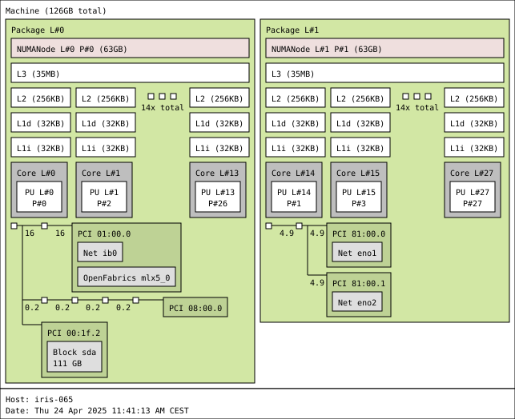

Affinity and pinning of processes and threads¶
HPC systems consist of multiple components that provide access to various resources. A process or thread running in some core of the system rarely has the same quality of access to all the resources. Take for instance a single CPU node of Iris.
Topology of an Iris CPU node

An Iris CPU node; the node contains 2 CPU sockets, each socket contains a single NUMA1 node, each NUMA node consists of a group of 14 cores sharing a single physical L3 cache, and each core provides a single PU2.
A typical HPC cluster node is composed of computing cores that are integrated in an recursive manner in more complex structures to implement the functionality of the node. In Iris CPU nodes for instance,
- compute nodes contain 2 sockets,
- each socket contains a single NUMA1,
- each NUMA node consists of a group of 14 cores sharing a single physical L3 cache, and
- each core provides a single PU (processor unit)23.
The CPU is thus organized in a number of levels with actual threads running on processor units, and processes consist of one or more threads. Communication between threads and thus processes, involves sending information from one thread to another. Depending on how many levels of the node architecture hierarchy the message has to pass the slower the communication will be. Also, threads and thus processes that are close in the architectural hierarchy tend to share memory. If you want more memory per thread you may have to spread your threads across processor units that are distant with respect to communication.
Typically the libraries used in HPC applications provide a high degree of control of process and thread placement. In order to extract the best performance from the HPC system you often need to specify the placement of threads and processes.
TL; DR
For regular CPU nodes there configuration that work well for the majority of the applications.
The recommended settings for optimal performance for most applications when using full nodes of Iris is to add the options:
--ntasks-per-socket=1,--cpus-per-task=14, and--distribution=block:block
in every call of srun. This is an example submission script.
#!/bin/bash --login
#SBATCH --job-name=stress_test
#SBATCH --partition=batch
#SBATCH --qos=normal
#SBATCH --nodes=4
#SBATCH --time=02:00:00
#SBATCH --output=%x-%j.out
#SBATCH --error=%x-%j.err
#SBATCH --exclusive
declare stress_test_duration=160
srun --ntasks-per-socket=1 --cpu-per-task=14 --distribution=block:block stress --cpu 14 --timeout "${stress_test_duration}"
The recommended settings for optimal performance for most applications when using full nodes of Aion is to add the options:
--ntasks-per-socket=1,--cpus-per-task=16, and--distribution=block:block
in every call of srun. This is an example submission script.
#!/bin/bash --login
#SBATCH --job-name=stress_test
#SBATCH --partition=batch
#SBATCH --qos=normal
#SBATCH --nodes=4
#SBATCH --time=02:00:00
#SBATCH --output=%x-%j.out
#SBATCH --error=%x-%j.err
#SBATCH --exclusive
declare stress_test_duration=160
srun --ntasks-per-socket=1 --cpu-per-task=16 --distribution=block:block stress --cpu 16 --timeout "${stress_test_duration}"
Process placement¶
A call to sbatch or salloc in clusters with the Slurm scheduler allocates the resources for a job. To pin processes of your job to specific cores within each node you need to set binding option in each step of your job with srun or in raw calls to mpirun.
Binding processes¶
Process (tasks) are bound to cores with the --cpu-bind=[verbose],<bind type> option flag of srun. The bind option assigns a process to fixed group of processor units for the duration of a job step. Some common options for <bind type> are
threads: binds processes to threads,cores: binds processes to cores,sockets: binds processes to sockets,map_cpu:<list>: binds processes to processor unit ranks given in a comma separated<list>, andmask_cpu:<list>: binds processes to groups of processing units defined by masks upon ranks given in a comma separated<list>.
You can optionally add the verbose option in debugging jobs to print process bindings before the job step runs.
Like with other resources, Slurm is using the control group feature of Linux to allocate processor units to processes. The base option that controls the allocation of cores is the mask_cpu. The other allocation options are converted to mask according to groupings of cores with similar access to resources by the hardware locality tool.
Mask binding¶
The basic biding option is the mask option, mask_cpu:<list>, all other options are converted to masks according to the site configuration of Slurm.
- The
<mask>is a bit field over the processor unit ranks (as reported by hardware locality) that marks with 1 the processor units that are available to a process running within a job step. - The
<list> == <mask>[,<mask>]option of the binding directive is a comma separated list of masks, each consecutive process of thesruncommand uses the corresponding mask. - The list is reused if the available masks are exhausted.
- Processes are allowed to move freely within the allocated processor units.
Hexadecimal notation for masks
Masks are written in hexadecimal notation. For instance, assume an allocation on some machine with 2 sockets, 16 cores per socket, and one hardware thread per core. Such an allocation contains 32 processor units (cores). Then, the mask
mask_cpu:0xff0000,0xff000000
| Process number | Processor unit availability |
|---|---|
0 |
0000 0000 1111 1111 0000 0000 0000 0000 |
1 |
1111 1111 0000 0000 0000 0000 0000 0000 |
2 |
0000 0000 1111 1111 0000 0000 0000 0000 |
3 |
1111 1111 0000 0000 0000 0000 0000 0000 |
that in turn constrain
- task 0 and 2 to run on processor units (hardware threads) 16 to 23 of the node, and
- task 1 and 3 to run on processor units (hardware threads) 24 to 31 of the node.
For convenience, you can add leading zeros to a mask so that all masks are of the same length, so, 0x00ff0000 = 0xff0000.
As an example consider an I/O throughput test for Aion local storage. In Aion there are 8 NUMA nodes per compute node, 4 CCXs per NUMA node, and 4 cores sharing a single L3 cache per CCX. Every digit in the hexadecimal mask controls the availability of a single CCX. To launch an I/O stress test in 4 parallel processes, with
- processes 0 and 2 pinned on CCX 0 of virtual socket 0, and
- processes 1 and 3 pinned on CCX 0 of virtual socket 1
use the following command.
salloc --nodes=1 --exclusive --partition=batch --qos=normal --time=4:00:00
srun --nodes=1 --ntasks-per-node=4 --cpu-bind=verbose,mask_cpu:0xf,0xf0000 stress --hdd 1 --timeout 240
Context switching within binding regions
The HDD stress test processes are I/O heavy and are often interrupted by thread and process context switching. You can login to the running job from another terminal using the sjoin alias available in UL HPC systems, and with htop you may see the load moving among the allocated cores.
Map binding¶
The map binding binds processes to specific processor units (PUs). The <list>==<PU rank>[,<PU rank>] option of the binding directive is a list of processing unit ranks, as reported by hardware locality.
- Processes launched within a job step use the processor unit with corresponding rank.
- Ranks may appear more that once if processing units are shared between processes.
- The list is reused if the available ranks are exhausted.
Limitations of map binding
Note that with the map binding each process is assigned a single processor unit. If your process needs more that one processor unit, as is the case with multithreaded processes, using another binging option like mask.
As an example consider an I/O throughput test for Aion local storage. In Aion there are 8 NUMA nodes per compute node, with 16 cores per NUMA node. Every digit in the hexadecimal mask controls the availability of a single CCX. To launch an I/O stress test in 4 parallel processes, with
- processes 0 and 1 pinned on cores 0 and 2 of virtual socket 0, and
- processes 2 and 3 pinned on cores 16 and 18 of virtual socket 1
use the following command.
salloc --nodes=1 --exclusive --partition=batch --qos=normal --time=4:00:00
srun --nodes=1 --ntasks-per-node=4 --cpu-bind=verbose,map_cpu:0,2,16,18 stress --hdd 1 --timeout 240
Automatically generated masks binding¶
The Slurm scheduler provides options to generate bindings automatically. Many systems as MUMPS rely on simple allocations of one MPI process per NUMA node, and OpenMP thread parallelism within NUMA nodes. Automatically generated masks can describe such simple binding efficiently and the resulting description is most often portable between systems.
When using automatic binging users may want to inspect the resulting binding mask. The binding is implemented using control groups, so the cores allocated for the process can be inspected with
- the
vorboseoption of binding, - the
tasksetcommand, or - directly reading the
Cpus_allowed_listin/proc/self/status.
As an example consider binding 2 process per node for 2 nodes with the various available options. The taskset command is used to report the core bindings, and the verbose option is enabled to print the same information in a format closer to the internal system representation. Start by creating an allocation with exclusive access to 2 nodes:
salloc --exclusive --nodes=2 --ntasks-per-node=2 --time=1:00:00
Simultaneous multi-threading is disabled in our systems, so the threads option is not relevant. The core and processor unit (threads) object types of hardware locality coincide.
In this example the processes are pinned to cores of the CPUs.
-
Allow processes to share sockets.
$ srun --nodes=2 --ntasks-per-node=2 --cpu-bind=verbose,cores bash -c 'echo -n "task ${SLURM_PROCID} (node ${SLURM_NODEID}): "; taskset --cpu-list --pid ${BASHPID}' | sort cpu-bind=MASK - aion-0014, task 0 0 [3431378]: mask 0x1 set cpu-bind=MASK - aion-0014, task 1 1 [3431379]: mask 0x2 set cpu-bind=MASK - aion-0220, task 2 0 [2549677]: mask 0x1 set cpu-bind=MASK - aion-0220, task 3 1 [2549678]: mask 0x2 set task 0 (node 0): pid 3431378's current affinity list: 0 task 1 (node 0): pid 3431379's current affinity list: 1 task 2 (node 1): pid 2549677's current affinity list: 0 task 3 (node 1): pid 2549678's current affinity list: 1 -
Processes pinned with one process per socket.
$ srun --nodes=2 --ntasks-per-node=2 --ntasks-per-socket=1 --cpu-bind=verbose,cores bash -c 'echo -n "task ${SLURM_PROCID} (node ${SLURM_NODEID}): "; taskset --cpu-list --pid ${BASHPID}' | sort cpu-bind=MASK - aion-0014, task 0 0 [3431621]: mask 0x1 set cpu-bind=MASK - aion-0014, task 1 1 [3431622]: mask 0x10000 set cpu-bind=MASK - aion-0220, task 2 0 [2549899]: mask 0x1 set cpu-bind=MASK - aion-0220, task 3 1 [2549900]: mask 0x10000 set task 0 (node 0): pid 3431621's current affinity list: 0 task 1 (node 0): pid 3431622's current affinity list: 16 task 2 (node 1): pid 2549899's current affinity list: 0 task 3 (node 1): pid 2549900's current affinity list: 16
In this example the processes are pinned to sockets of the processesing nodes.
-
Allow processes to share sockets (one processor unit per process by default).
$ srun --nodes=2 --ntasks-per-node=2 --cpu-bind=verbose,sockets bash -c 'echo -n "task ${SLURM_PROCID} (node ${SLURM_NODEID}): "; taskset --cpu-list --pid ${BASHPID}' | sort cpu-bind=MASK - aion-0014, task 0 0 [3431515]: mask 0xffff set cpu-bind=MASK - aion-0014, task 1 1 [3431516]: mask 0xffff set cpu-bind=MASK - aion-0220, task 2 0 [2549712]: mask 0xffff set cpu-bind=MASK - aion-0220, task 3 1 [2549713]: mask 0xffff set task 0 (node 0): pid 3431515's current affinity list: 0-15 task 1 (node 0): pid 3431516's current affinity list: 0-15 task 2 (node 1): pid 2549712's current affinity list: 0-15 task 3 (node 1): pid 2549713's current affinity list: 0-15 -
Processes pinned with one process per socket.
$ srun --nodes=2 --ntasks-per-node=2 --ntasks-per-socket=1 --cpu-bind=verbose,sockets bash -c 'echo -n "task ${SLURM_PROCID} (node ${SLURM_NODEID}): "; taskset --cpu-list --pid ${BASHPID}' | sort cpu-bind=MASK - aion-0014, task 0 0 [3431908]: mask 0xffff set cpu-bind=MASK - aion-0014, task 1 1 [3431909]: mask 0xffff0000 set cpu-bind=MASK - aion-0220, task 2 0 [2550128]: mask 0xffff set cpu-bind=MASK - aion-0220, task 3 1 [2550129]: mask 0xffff0000 set task 0 (node 0): pid 3431908's current affinity list: 0-15 task 1 (node 0): pid 3431909's current affinity list: 16-31 task 2 (node 1): pid 2550128's current affinity list: 0-15 task 3 (node 1): pid 2550129's current affinity list: 16-31
With custom bindings we specify exactly where processes are bound.
-
Pin (single threaded) processes to sockets.
$ srun --cpu-bind=verbose,mask_cpu:0xffff,0xffff0000 bash -c 'echo -n "task ${SLURM_PROCID} (node ${SLURM_NODEID})"; taskset --cpu-list --pid ${BASHPID}' | sort cpu-bind=MASK - aion-0001, task 0 0 [3535103]: mask 0xffff set cpu-bind=MASK - aion-0001, task 1 1 [3535104]: mask 0xffff0000 set cpu-bind=MASK - aion-0339, task 2 0 [3595625]: mask 0xffff set cpu-bind=MASK - aion-0339, task 3 1 [3595626]: mask 0xffff0000 set task 0 (node 0)pid 3535103's current affinity list: 0-15 task 1 (node 0)pid 3535104's current affinity list: 16-31 task 2 (node 1)pid 3595625's current affinity list: 0-15 task 3 (node 1)pid 3595626's current affinity list: 16-31 -
Pin processes to cores.
$ srun --cpu-bind=verbose,mask_cpu:0x1,0x10000 bash -c 'echo -n "task ${SLURM_PROCID} (node ${SLURM_NODEID})"; taskset --cpu-list --pid ${BASHPID}' | sort cpu-bind=MASK - aion-0014, task 0 0 [3435289]: mask 0x1 set cpu-bind=MASK - aion-0014, task 1 1 [3435290]: mask 0x10000 set cpu-bind=MASK - aion-0220, task 2 0 [2553408]: mask 0x1 set cpu-bind=MASK - aion-0220, task 3 1 [2553409]: mask 0x10000 set task 0 (node 0)pid 3435289's current affinity list: 0 task 1 (node 0)pid 3435290's current affinity list: 16 task 2 (node 1)pid 2553408's current affinity list: 0 task 3 (node 1)pid 2553409's current affinity list: 16
Printing the binding information however, demonstrates how processes are spread across nodes. By default, the tasks are distributed in blocks, where first the available slots in the first node of the allocation are filled, before moving to the next.
An exhaustive list of reporting features for binding configurations can be found in the administrator's guide of Slurm.
Resources
Process distribution¶
The processes of a job step are distributed along the compute nodes of a job. The distribution of the process is controlled with the --distribution option flag or srun, and the distribution mechanism is based on hardware locality and control groups, like the binding mechanism. The basic options for the distribution option flags are --distribution={*|block|cyclic|arbitrary}[:{*|block|cyclic|fcyclic}[:{*|block|cyclic|fcyclic}]] and their meaning is the following.
- Level 0 (default
block): Determines the distributing of processes across nodes (depth 0 of hardware locality objects).*: Use the default methodblock: Distribute processes in a balanced manner across nodes so that if not enough node are available consecutive tasks share a node.cyclic: Distribute processes across nodes in a round-robin manner, so that consecutive processes are placed on consecutive nodes of the allocation node list (${SLURM_NODELIST}).arbitrary: Used in conjunction with--nodelist=<node>,[<nodes>]*to place processes in consecutive nodes in the provided nodes in a round-robin manner.
- Level 1 (default
block): Determines the distributing of processes across sockets (depth 1 of hardware locality objects).*: Use the default methodblock: Distribute processes for binding in a balanced manner across sockets of the node so that consecutive processes are places in consecutive cores.cyclic: Distribute processes across sockets of a node in a round-robin manner so that consecutive processes are placed in consecutive sockets, and allocate cores in for each process in a consecutive manner within the socket.fcyclic: Distribute processes across sockets of a node in a round-robin manner over processes so that a core of the 1st non-fully allocated process is placed on the first socket with an available core, then a core of the 2nd non-fully allocated process is placed on the first socket with an unallocated core, and so on.
- Level 2 (default
block): Determines the distributing of processes across cores in a socket (depth 7 of hardware locality objects).*: Use the default methodblock: Distribute processes for binding in a balanced manner across processor units (hardware threads) of the core so that consecutive processes are places in consecutive processor units.cyclic: Distribute processes in a round robin manner across cores so that consecutive processes are placed in consecutive cores, and allocate processor units for each processes in a consecutive manner within the core.fcyclic: Distribute processes across processor units of a core in a round-robin manner over processes so that a processor unit of the 1st non-fully allocated process is places on the first core with an available processor unit, then a processor unit of the 2nd non-fully allocated process is place in the first core with an unallocated processor unit, and so on.
Relevant options for Aion and Iris
In Aion and Iris the simultaneous multithreading (SMT) is disabled, and all cores contain a single processor unit (hardware thread). Thus, the level 2 options for the --distribution flag are redundant.
Difference between the cyclic and fcyclic options
Consider a system with
- 2 sockets (
S[0-1]) - 4 cores per socket (
C[0-3]), and - 2 processor units per core (
P[0-1]).
If a job step with 16 processes with 1 processor unit per process are allocated as follows.
Distribution (--distribution) |
Allocation |
|---|---|
*:cyclic:cyclic |
S0C0P0 S0C0P1 S0C1P0 S0C1P1 S0C2P0 S0C2P1 S0C3P0 S0C3P1 S1C0P0 S1C0P1 S1C1P0 S1C1P1 S1C2P0 S1C2P1 S1C3P0 S1C3P1 |
*:cyclic:fcyclic |
S0C0P0 S0C1P0 S0C2P0 S0C3P0 S0C0P1 S0C1P1 S0C2P1 S0C3P1 S1C0P0 S1C1P0 S1C2P0 S1C3P0 S1C0P1 S1C1P1 S1C2P1 S1C3P1 |
*:fcyclic:cyclic |
S0C0P0 S1C0P0 S0C0P1 S1C0P1 S0C1P0 S1C1P0 S0C1P1 S1C1P1 S0C2P0 S1C2P0 S0C2P1 S1C2P1 S3C1P0 S1C3P0 S0C3P1 S1C3P1 |
*:fcyclic:fcyclic |
S0C0P0 S1C0P0 S0C1P0 S1C1P0 S0C0P1 S1C0P1 S0C1P1 S1C1P1 S0C2P0 S1C2P0 S0C3P0 S1C3P0 S0C2P1 S1C2P1 S0C3P1 S1C3P1 |
An easy way to remember the order is that f prefix flips the order of significance between adjacent objects of the system starting from right to left on the original significance order. The relation is depicted in the following table.
Distribution (--distribution) |
Order of object significance |
|---|---|
*:cyclic:cyclic |
SCP |
*:cyclic:fcyclic |
SPC |
*:fcyclic:cyclic |
CPS |
*:fcyclic:fcyclic |
PCS |
Automatic distributions¶
Typical distributions of processes can be achieved using the typical automatic options of the distribution flag. Consider for instance an allocation of 2 nodes in Aion.
salloc --exclusive --nodes=2
Then, the processes of a job step with 8 processes can be distributed using the automatic options for nodes (level 0) in 2 different manners.
$ srun --ntasks=8 --distribution=block bash -c 'echo -n "task $SLURM_PROCID (node $SLURM_NODEID): "; taskset --cpu-list --pid ${BASHPID}' | sort --key=2 --numeric-sort
task 0 (node 0): pid 3584429's current affinity list: 0
task 1 (node 0): pid 3584430's current affinity list: 1
task 2 (node 0): pid 3584431's current affinity list: 2
task 3 (node 0): pid 3584432's current affinity list: 3
task 4 (node 1): pid 3628427's current affinity list: 0
task 5 (node 1): pid 3628428's current affinity list: 1
task 6 (node 1): pid 3628429's current affinity list: 2
task 7 (node 1): pid 3628430's current affinity list: 3
$ srun --ntasks=8 --distribution=cyclic bash -c 'echo -n "task $SLURM_PROCID (node $SLURM_NODEID): "; taskset --cpu-list --pid ${BASHPID}' | sort --key=2 --numeric-sort
task 0 (node 0): pid 3584499's current affinity list: 0
task 1 (node 1): pid 3628579's current affinity list: 0
task 2 (node 0): pid 3584500's current affinity list: 1
task 3 (node 1): pid 3628580's current affinity list: 1
task 4 (node 0): pid 3584501's current affinity list: 2
task 5 (node 1): pid 3628581's current affinity list: 2
task 6 (node 0): pid 3584502's current affinity list: 3
task 7 (node 1): pid 3628582's current affinity list: 3
Consider another example where a job step with 32 processes of 4 threads each needs to be distributed over 2 nodes. This is a typical situation for Aion where every 4 cores share a physically coherent cache. Many applications are optimized to take advantage of L3 cache for shared memory parallelism and use message passing parallelism for communication across physically coherent L3 cache regions. A combination of the --cpus-per-task flag that generates binding automatically, and the automatic options for the distribution flag is usually sufficient for most such jobs.
$ srun --ntasks=32 --cpus-per-task=4 --distribution=block:block bash -c 'echo -n "task $SLURM_PROCID (node $SLURM_NODEID): "; taskset --cpu-list --pid ${BASHPID}' | sort --key=2 --numeric-sort
task 0 (node 0): pid 3585148's current affinity list: 0-3
task 1 (node 0): pid 3585149's current affinity list: 4-7
task 2 (node 0): pid 3585150's current affinity list: 8-11
task 3 (node 0): pid 3585151's current affinity list: 12-15
task 4 (node 0): pid 3585152's current affinity list: 16-19
task 5 (node 0): pid 3585153's current affinity list: 20-23
task 6 (node 0): pid 3585154's current affinity list: 24-27
task 7 (node 0): pid 3585155's current affinity list: 28-31
task 8 (node 0): pid 3585156's current affinity list: 32-35
task 9 (node 0): pid 3585157's current affinity list: 36-39
task 10 (node 0): pid 3585158's current affinity list: 40-43
task 11 (node 0): pid 3585159's current affinity list: 44-47
task 12 (node 0): pid 3585160's current affinity list: 48-51
task 13 (node 0): pid 3585161's current affinity list: 52-55
task 14 (node 0): pid 3585162's current affinity list: 56-59
task 15 (node 0): pid 3585163's current affinity list: 60-63
task 16 (node 1): pid 3629024's current affinity list: 0-3
task 17 (node 1): pid 3629025's current affinity list: 4-7
task 18 (node 1): pid 3629026's current affinity list: 8-11
task 19 (node 1): pid 3629027's current affinity list: 12-15
task 20 (node 1): pid 3629028's current affinity list: 16-19
task 21 (node 1): pid 3629029's current affinity list: 20-23
task 22 (node 1): pid 3629030's current affinity list: 24-27
task 23 (node 1): pid 3629031's current affinity list: 28-31
task 24 (node 1): pid 3629032's current affinity list: 32-35
task 25 (node 1): pid 3629033's current affinity list: 36-39
task 26 (node 1): pid 3629034's current affinity list: 40-43
task 27 (node 1): pid 3629035's current affinity list: 44-47
task 28 (node 1): pid 3629036's current affinity list: 48-51
task 29 (node 1): pid 3629037's current affinity list: 52-55
task 30 (node 1): pid 3629038's current affinity list: 56-59
task 31 (node 1): pid 3629039's current affinity list: 60-63
$ srun --ntasks=32 --cpus-per-task=4 --distribution=block:cyclic bash -c 'echo -n "task $SLURM_PROCID (node $SLURM_NODEID): "; taskset --cpu-list --pid ${BASHPID}' | sort --key=2 --numeric-sort
task 0 (node 0): pid 3585968's current affinity list: 0-3
task 1 (node 0): pid 3585969's current affinity list: 16-19
task 2 (node 0): pid 3585970's current affinity list: 32-35
task 3 (node 0): pid 3585971's current affinity list: 48-51
task 4 (node 0): pid 3585972's current affinity list: 64-67
task 5 (node 0): pid 3585973's current affinity list: 80-83
task 6 (node 0): pid 3585974's current affinity list: 96-99
task 7 (node 0): pid 3585975's current affinity list: 112-115
task 8 (node 0): pid 3585976's current affinity list: 4-7
task 9 (node 0): pid 3585977's current affinity list: 20-23
task 10 (node 0): pid 3585978's current affinity list: 36-39
task 11 (node 0): pid 3585979's current affinity list: 52-55
task 12 (node 0): pid 3585980's current affinity list: 68-71
task 13 (node 0): pid 3585981's current affinity list: 84-87
task 14 (node 0): pid 3585982's current affinity list: 100-103
task 15 (node 0): pid 3585983's current affinity list: 116-119
task 16 (node 1): pid 3629593's current affinity list: 0-3
task 17 (node 1): pid 3629594's current affinity list: 16-19
task 18 (node 1): pid 3629595's current affinity list: 32-35
task 19 (node 1): pid 3629596's current affinity list: 48-51
task 20 (node 1): pid 3629597's current affinity list: 64-67
task 21 (node 1): pid 3629598's current affinity list: 80-83
task 22 (node 1): pid 3629599's current affinity list: 96-99
task 23 (node 1): pid 3629600's current affinity list: 112-115
task 24 (node 1): pid 3629601's current affinity list: 4-7
task 25 (node 1): pid 3629602's current affinity list: 20-23
task 26 (node 1): pid 3629603's current affinity list: 36-39
task 27 (node 1): pid 3629604's current affinity list: 52-55
task 28 (node 1): pid 3629605's current affinity list: 68-71
task 29 (node 1): pid 3629606's current affinity list: 84-87
task 30 (node 1): pid 3629607's current affinity list: 100-103
task 31 (node 1): pid 3629608's current affinity list: 116-119
$ srun --ntasks=32 --cpus-per-task=4 --distribution=cyclic:block bash -c 'echo -n "task $SLURM_PROCID (node $SLURM_NODEID): "; taskset --cpu-list --pid ${BASHPID}' | sort --key=2 --numeric-sort
task 0 (node 0): pid 3586174's current affinity list: 0-3
task 1 (node 1): pid 3629673's current affinity list: 0-3
task 2 (node 0): pid 3586175's current affinity list: 4-7
task 3 (node 1): pid 3629674's current affinity list: 4-7
task 4 (node 0): pid 3586176's current affinity list: 8-11
task 5 (node 1): pid 3629675's current affinity list: 8-11
task 6 (node 0): pid 3586177's current affinity list: 12-15
task 7 (node 1): pid 3629676's current affinity list: 12-15
task 8 (node 0): pid 3586178's current affinity list: 16-19
task 9 (node 1): pid 3629677's current affinity list: 16-19
task 10 (node 0): pid 3586179's current affinity list: 20-23
task 11 (node 1): pid 3629678's current affinity list: 20-23
task 12 (node 0): pid 3586180's current affinity list: 24-27
task 13 (node 1): pid 3629679's current affinity list: 24-27
task 14 (node 0): pid 3586181's current affinity list: 28-31
task 15 (node 1): pid 3629680's current affinity list: 28-31
task 16 (node 0): pid 3586182's current affinity list: 32-35
task 17 (node 1): pid 3629681's current affinity list: 32-35
task 18 (node 0): pid 3586183's current affinity list: 36-39
task 19 (node 1): pid 3629682's current affinity list: 36-39
task 20 (node 0): pid 3586184's current affinity list: 40-43
task 21 (node 1): pid 3629683's current affinity list: 40-43
task 22 (node 0): pid 3586185's current affinity list: 44-47
task 23 (node 1): pid 3629684's current affinity list: 44-47
task 24 (node 0): pid 3586186's current affinity list: 48-51
task 25 (node 1): pid 3629685's current affinity list: 48-51
task 26 (node 0): pid 3586187's current affinity list: 52-55
task 27 (node 1): pid 3629686's current affinity list: 52-55
task 28 (node 0): pid 3586188's current affinity list: 56-59
task 29 (node 1): pid 3629687's current affinity list: 56-59
task 30 (node 0): pid 3586189's current affinity list: 60-63
task 31 (node 1): pid 3629688's current affinity list: 60-63
$ srun --ntasks=32 --cpus-per-task=4 --distribution=cyclic:cyclic bash -c 'echo -n "task $SLURM_PROCID (node $SLURM_NODEID): "; taskset --cpu-list --pid ${BASHPID}' | sort --key=2 --numeric-sort
task 0 (node 0): pid 3586295's current affinity list: 0-3
task 1 (node 1): pid 3629775's current affinity list: 0-3
task 2 (node 0): pid 3586296's current affinity list: 16-19
task 3 (node 1): pid 3629776's current affinity list: 16-19
task 4 (node 0): pid 3586297's current affinity list: 32-35
task 5 (node 1): pid 3629777's current affinity list: 32-35
task 6 (node 0): pid 3586298's current affinity list: 48-51
task 7 (node 1): pid 3629778's current affinity list: 48-51
task 8 (node 0): pid 3586299's current affinity list: 64-67
task 9 (node 1): pid 3629779's current affinity list: 64-67
task 10 (node 0): pid 3586300's current affinity list: 80-83
task 11 (node 1): pid 3629780's current affinity list: 80-83
task 12 (node 0): pid 3586301's current affinity list: 96-99
task 13 (node 1): pid 3629781's current affinity list: 96-99
task 14 (node 0): pid 3586302's current affinity list: 112-115
task 15 (node 1): pid 3629782's current affinity list: 112-115
task 16 (node 0): pid 3586303's current affinity list: 4-7
task 17 (node 1): pid 3629783's current affinity list: 4-7
task 18 (node 0): pid 3586304's current affinity list: 20-23
task 19 (node 1): pid 3629784's current affinity list: 20-23
task 20 (node 0): pid 3586305's current affinity list: 36-39
task 21 (node 1): pid 3629785's current affinity list: 36-39
task 22 (node 0): pid 3586306's current affinity list: 52-55
task 23 (node 1): pid 3629786's current affinity list: 52-55
task 24 (node 0): pid 3586307's current affinity list: 68-71
task 25 (node 1): pid 3629787's current affinity list: 68-71
task 26 (node 0): pid 3586308's current affinity list: 84-87
task 27 (node 1): pid 3629788's current affinity list: 84-87
task 28 (node 0): pid 3586309's current affinity list: 100-103
task 29 (node 1): pid 3629789's current affinity list: 100-103
task 30 (node 0): pid 3586310's current affinity list: 116-119
task 31 (node 1): pid 3629790's current affinity list: 116-119
Automatic options for the distribution flag are simple to define reducing the chance of typos, and are portable between systems. However, sometimes like in the case of system benchmarking, very accurate control of process placement is required.
Manual distribution¶
Very precise placement of processes is afforded using the node list (--nodelist) argument, the arbitrary distribution, and CPU masks. The automatic options themselves are converted into node lists and CPU masks in the background. This is demonstrated in the following example.
-
Start by allocating a job with 2 nodes:
salloc --exclusive --nodes=2 -
Then read the allocated nodes:
$ echo $SLURM_NODELIST aion-[0001,0339] -
Finally, use a combination of the
--nodelistoption to place processes into nodes and bind them is the desired group of cores.$ srun --nodelist=aion-[0001,0339,0001,0339,0339,0339,0339,0339] --distribution=arbitrary --cpu-bind=verbose,mask_cpu:0xf,0xf0,0xf00,0xf000,0xf0000,0xf00000,0xf000000,0xf0000000 bash -c 'echo -n "task $SLURM_PROCID (node $SLURM_NODEID): "; taskset --cpu-list --pid ${BASHPID}' | sort cpu-bind=MASK - aion-0001, task 0 0 [3576513]: mask 0xf set cpu-bind=MASK - aion-0001, task 2 1 [3576514]: mask 0xf0 set cpu-bind=MASK - aion-0339, task 1 0 [3623221]: mask 0xf set cpu-bind=MASK - aion-0339, task 3 1 [3623222]: mask 0xf0 set cpu-bind=MASK - aion-0339, task 4 2 [3623223]: mask 0xf00 set cpu-bind=MASK - aion-0339, task 5 3 [3623224]: mask 0xf000 set cpu-bind=MASK - aion-0339, task 6 4 [3623225]: mask 0xf0000 set cpu-bind=MASK - aion-0339, task 7 5 [3623226]: mask 0xf00000 set task 0 (node 0): pid 3576513's current affinity list: 0-3 task 1 (node 1): pid 3623221's current affinity list: 0-3 task 2 (node 0): pid 3576514's current affinity list: 4-7 task 3 (node 1): pid 3623222's current affinity list: 4-7 task 4 (node 1): pid 3623223's current affinity list: 8-11 task 5 (node 1): pid 3623224's current affinity list: 12-15 task 6 (node 1): pid 3623225's current affinity list: 16-19
With the arbitrary option of the distribution flag, the launcher will launch one processes in every entry of the node list (repeated entries allowed). If no node list (--nodelist) is provided, then the distribution method defaults to block.
Resources¶
- Hardware Locality (hwloc)
- Distribution and binding options - LUMI
- Process and Thread Distribution and Binding - MUNI trainings